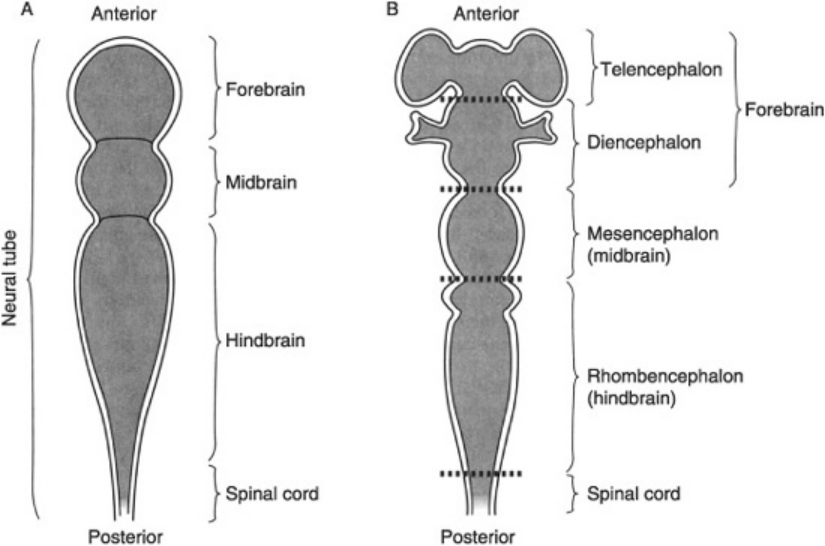
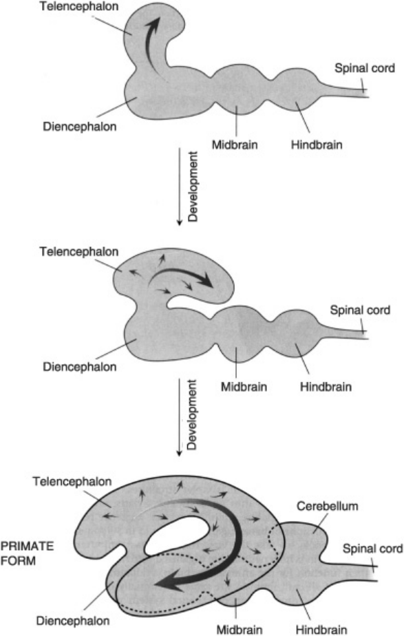
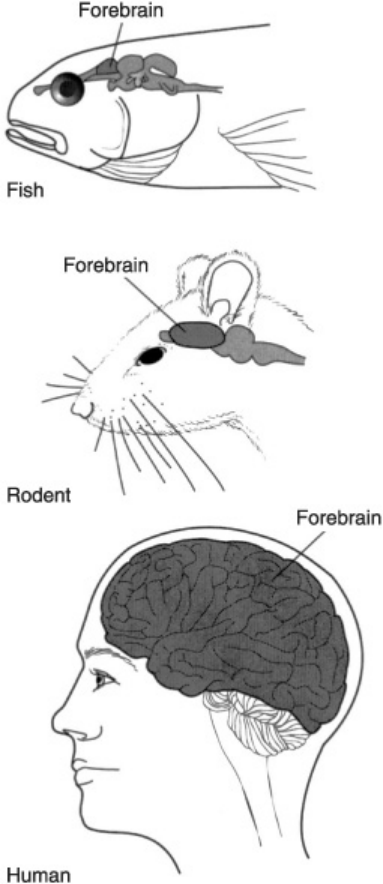
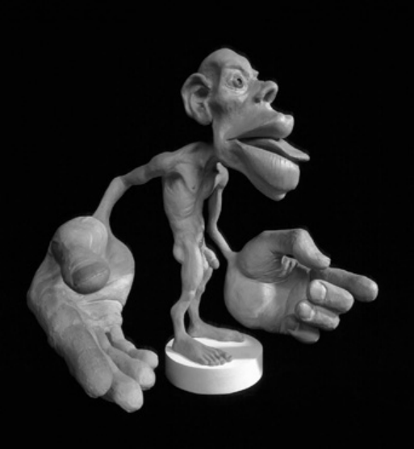

Chương 4: Từ Big Bang Đến Bộ Não Lớn
Sự tiến hóa ban đầu của hệ thần kinh
Các nhà thiên văn học cho chúng ta biết rằng vũ trụ của chúng ta đã bắt đầu bằng một tiếng nổ — thực chất là một Big Bang. Ngày nay, trong góc nhỏ bé của vũ trụ này, khoảng 14 tỷ năm sau, những thực thể vật chất có khả năng suy ngẫm về vị trí của mình trong vũ trụ đã bằng cách nào đó xuất hiện. Có thể coi là chắc chắn rằng các bộ não đã không đột nhiên chào đời từ hư vô, nhưng bằng cách nào và theo lộ trình nào mà các bộ não đã được tạo ra? Câu trả lời là, cũng như mọi biểu hiện khác của sự sống, não bộ là kết quả của quá trình tiến hóa (evolution) ngẫu nhiên và đầy rủi ro thông qua chọn lọc tự nhiên (natural selection). Điều đó đã không xảy ra trong một sớm một chiều.
Hành tinh Trái Đất của chúng ta ra đời khoảng 4,5 tỷ năm trước. Ban đầu đã không có sự sống, nhưng trong vòng khoảng một tỷ năm, hóa học tiền sinh học của sự sống đã bắt đầu và những sinh vật nguyên thủy đầu tiên xuất hiện. Như vậy đã bắt đầu quá trình tiến hóa hữu cơ dẫn đến bộ não người quá khổ của chúng ta ngày nay. Đó là một quá trình phải mất ba nghìn rưỡi triệu năm mới hoàn tất.
Theo như chúng ta biết, chúng ta là những cư dân đầu tiên có ý thức về bản thân trên Trái Đất, và gần như chắc chắn là những kẻ đầu tiên đặt câu hỏi về nguồn gốc và vị trí của mình trong vũ trụ kỳ lạ này. Ngày nay chúng ta đang đứng ở ngưỡng cửa của việc thám hiểm và khai thác có người lái các hành tinh khác trong hệ mặt trời của mình và có thể cả những miền xa hơn nữa. Hơn bất cứ điều gì khác, chính những bộ não tò mò và tự tin không thể kìm nén của chúng ta đã thúc đẩy cuộc truy cầu sự hiểu biết này và làm cho tất cả những điều đó trở thành hiện thực.
Có thể hiểu thêm về quá trình mà các bộ não của chúng ta hình thành và đạt được những khả năng phi thường bằng cách nghiên cứu những động vật đơn giản hơn chúng ta rất nhiều. Hầu hết động vật đều có một hệ thần kinh (nervous system) và một dạng não bộ nào đó, đơn giản là sự tập trung của các tế bào thần kinh — thường được đặt hợp lý ở đầu trước. Dù chúng ta có thể là loài duy nhất được ban cho một bộ não bận tâm suy nghĩ về chính nó, thì ngay cả điều đó cũng hẳn đã khởi nguồn từ nhiệm vụ cảm nhận và phản ứng với môi trường. Đó là những chức năng cơ bản nhất của hệ thần kinh — cung cấp cho động vật khả năng phát hiện các đặc điểm nổi bật của môi trường xung quanh luôn thay đổi và phản ứng một cách phù hợp. Dù bộ não đã phát triển tinh xảo nghệ thuật cảm nhận và phản ứng, khả năng này không hề độc quyền thuộc về nó. Nó có tính cổ xưa gần như không thể tưởng tượng, có trước hệ thần kinh một khoảng thời gian đáng kể, và có thể được truy vết đến những bước sơ khai nhất trong nguồn gốc của sự sống, đặc biệt là sự tiến hóa của tế bào sinh học đầu tiên.
Những tế bào sơ khai sống trong nước và sớm đạt được khả năng vận động. Các tế bào đơn lẻ bơi bằng nhiều cách, kể cả việc quật mạnh những flagella (roi) giống roi và sự vẫy phối hợp của nhiều “sợi lông” ngắn hơn gọi là cilia (lông rung). Những sinh vật đơn bào khác có thể bò dần bằng cách duỗi ra và thu vào những “bàn chân” hay giả chân từ thân tế bào. Điều quan trọng là sự vận động đã cho phép những sinh vật đơn bào sơ khai khám phá và khai thác nhiều hơn thế giới của chúng cùng các tài nguyên của nó. Khi khả năng vận động được kết hợp với khả năng cảm nhận, sự di chuyển có thể được hướng đến những vùng giàu tài nguyên, và những cá thể làm điều này hiệu quả nhất đã sinh sản nhiều hơn và phát triển thịnh vượng.
Vì vậy, ngay cả một tế bào đơn lẻ sống tự do cũng có thể cư xử thích nghi, định hướng, và di chuyển “một cách thông minh” để đáp lại các kích thích của môi trường, kết hợp tất cả các chức năng cảm nhận và hành động cần thiết để sinh tồn mà không cần hệ thần kinh. Điều này có thể thấy ở các sinh vật đơn bào hiện đại như loài nguyên sinh có lông rung Paramecium, loài có một vốn hành vi định hướng phong phú. Chúng có thể cảm nhận rồi bơi về phía nguồn thức ăn chính của mình — chất hữu cơ đang phân rã. Paramecium cũng có một giác quan xúc giác sơ khai giúp nó luồn tránh chướng ngại sau khi va chạm vào chúng. Điều này liên quan đến việc đảo ngược hướng bơi và quay đi khỏi chướng ngại trước khi tiếp tục tiến về phía trước. Hành vi này được trung gian hóa bởi những thay đổi về điện thế qua màng tế bào, liên quan đến sự dồn vào và thoát ra của các ion calci và kali. Như vậy các kích thích cơ học gợi ra những điện thế giống như xung thần kinh trong các tế bào thần kinh (neurons).
Như chúng ta đã thấy, bộ máy phân tử của cảm nhận và hành động đã tồn tại ở các sinh vật đơn bào, từ rất lâu trước khi động vật đa bào xuất hiện. Nhưng khả năng hành động dựa trên cảm giác đã được biến đổi khi các sinh vật đa bào tiến hóa. Giờ đây các tế bào có thể hợp tác với nhau, phân chia giữa chúng những vai trò khác nhau và chuyên môn hóa cao. Các tế bào cá thể không còn phải thực hiện từng vai trò thiết yếu; chúng có thể “chuyên biệt hóa” về mặt chức năng so với nhau. Như vậy sân khấu đã được dàn dựng cho sự tiến hóa của hệ thần kinh — một tập hợp các tế bào được chuyên biệt hóa cao, được thiết kế để cảm nhận, phân tích, lưu trữ và truyền tải thông tin, cũng như để điều hướng hành vi thích nghi vì lợi ích của sự sinh tồn và sinh sản của toàn bộ sinh vật. Bộ công cụ cần thiết cho tín hiệu hóa học và điện mà chức năng của hệ thần kinh phụ thuộc vào đã có sẵn. Bộ não không phải phát minh lại mọi thứ từ đầu — nó tiến hóa bằng cách biến đổi và kết hợp các cơ chế đã có từ trước ở những động vật không có não.

Hình 5 — Hành vi tránh né của Paramecium. Một con vật chỉ gồm một tế bào có thể cảm nhận và phản ứng với thế giới của nó — mà không cần đến một bộ não. Tuy nhiên, các cơ chế phân tử làm nền tảng cho hành vi tránh né đơn giản này lại tương tự như những cơ chế làm nền tảng cho xung thần kinh điện trong các nơ-ron của chính bộ não chúng ta.
Rất có thể những động vật đầu tiên có nơ-ron thật sự đã có một hệ thần kinh gồm một mạng lưới thần kinh (nerve net) phân tán, với rất ít hoặc không có sự tập trung tế bào thần kinh ở bất kỳ bộ phận cụ thể nào của cơ thể. Đặc điểm phân tán này của hệ thần kinh hoạt động tốt ở những động vật đối xứng tâm, trong đó không có bộ phận nào của cơ thể có khả năng gặp phải thức ăn hay nguy hiểm trước các bộ phận khác nhiều hơn hay ít hơn. Ở dạng đơn giản nhất, mạng lưới thần kinh gồm các nơ-ron cảm giác, tác động trực tiếp lên các tế bào co bóp. Vì những nơ-ron này phải cảm nhận môi trường bên ngoài, chúng bắt nguồn từ các tế bào tạo thành lớp ngoài của cơ thể, ectoderm (lớp ngoài phôi). Điều thú vị là bộ não của chúng ta trong phôi thai bắt nguồn từ mô ngoài phôi, vốn trong suốt quá trình phát triển trở nên được nạp vào bên trong.
Trong những sắp xếp phức tạp hơn của các nơ-ron, chức năng cảm giác và chức năng vận động được giao cho các loại tế bào khác nhau. Các tế bào cảm giác chuyên biệt kích hoạt các nơ-ron vận động, rồi đến lượt chúng chi phối các tế bào co bóp. Gần như không có, hoặc có rất ít, “nơ-ron trung gian” — những tế bào thần kinh nằm xen giữa các nơ-ron cảm giác và vận động. Chính trong sự phát triển tinh vi của hệ thần kinh trung ương (central nervous system) ở các động vật bậc cao mà chúng ta thấy sự bùng nổ khổng lồ của các nơ-ron trung gian. Bằng cách đứng trung gian giữa chức năng cảm nhận và chức năng vận động, các nơ-ron trung gian giúp hành vi của động vật bớt bị chi phối bởi những phản ứng tự động trước các kích thích bên ngoài. Thực chất, các nơ-ron trung gian đưa vào khả năng có một khoảng cách nhận thức giữa kích thích và phản ứng, cho phép cân nhắc thông minh các lựa chọn — nói cách khác là “suy nghĩ” — trước khi hành động được thực hiện. Sự gia tăng số lượng nơ-ron trung gian cũng cung cấp số lượng cần thiết cho dung lượng trí nhớ lớn hơn và cho việc xử lý thông tin tinh vi hơn.
Xu hướng hướng tới một hệ thần kinh trung ương thật sự đã nhận được động lực mạnh nhất và không thể cưỡng lại với sự tiến hóa của những động vật có cơ thể đối xứng hai bên. Tổ tiên của chúng ta có cơ thể thuôn dài và lối sống bò trườn, ăn các chất hữu cơ trên đáy biển. Việc có miệng ở phía trước hướng xuống đã làm cho lối sống này dễ dàng hơn và tạo ra sự phân biệt giữa mặt lưng (phía trên) và mặt bụng (phía dưới). Hệ quả quan trọng nhất của đối xứng hai bên là phía trước có thể được phân biệt với phía sau — thực chất là đã “phát minh” ra đầu. Vì hầu hết động vật đối xứng hai bên di chuyển về phía trước, nên việc tập trung các giác quan và hệ thần kinh trung ương ở đầu là hợp lý, một hiện tượng được gọi là cephalization (tập trung hóa ở đầu). Sau cùng, phía trước sẽ gặp phải cơ hội, thức ăn và nguy hiểm trước tiên, điều này giải thích tại sao bộ não của hầu hết động vật lại nằm ở phía trước.
Ngoại trừ những động vật đối xứng hai bên nguyên thủy nhất, cơ thể được chia dọc theo chiều dài thành một loạt các đốt. Điều này rõ rệt nhất ở giun đốt như giun đất và đỉa, nơi cơ thể gồm các đốt gần như giống hệt nhau. Sự phân đốt của cơ thể được phản ánh trong sự phân đốt của hệ thần kinh trung ương. Ở giun và côn trùng, mỗi đốt cơ thể chứa một hạch thần kinh (ganglion) trung tâm, một tập hợp các tế bào thần kinh đảm nhiệm chức năng cảm giác và vận động của đốt đó. Các hạch được nối với nhau bằng những “dây nối” dọc thành cặp chứa sợi trục (axons) của các tế bào thần kinh trao đổi thông tin giữa các hạch. Như vậy các hạch tạo thành một “dây thần kinh” chạy dọc chiều dài cơ thể. Điều này đảm bảo rằng các hạch không hành động độc lập và rằng các đốt cơ thể hợp tác với nhau trong việc tạo ra hành vi phối hợp.
Ở các động vật không xương sống đối xứng hai bên, dây thần kinh nằm ở mặt bụng của ống tiêu hóa hay ruột. Điều này trái ngược với tình huống ở các động vật có xương sống, trong đó tủy sống (spinal cord) nằm ở mặt lưng, còn ruột nằm ở mặt bụng của nó. Bạn có thể tưởng tượng rằng bản thiết kế của hệ thần kinh ở động vật không xương sống và có xương sống khác biệt căn bản đến mức chúng hẳn phải có lịch sử tiến hóa rất khác nhau. Nhưng động vật có xương sống và không xương sống chia sẻ nhiều điểm giống nhau hơn là khác biệt. Chúng ta hãy giải quyết trực tiếp vấn đề vị trí lưng so với bụng của hệ thần kinh trung ương. Trong quá trình phát triển phôi thai, các gen (genes) được biểu hiện, quyết định các chương trình phát triển dẫn đến các mô cụ thể ở mặt lưng và mặt bụng. Những gen này rất giống nhau về cấu trúc DNA ở các loài không xương sống và có xương sống, vì vậy hẳn chúng bắt nguồn từ các gen tổ tiên chung. Tuy nhiên, các gen ở động vật có xương sống quyết định các mô và cơ quan ở mặt bụng lại có quan hệ gần nhất với các gen ở động vật không xương sống xác định mặt lưng. Dường như lời giải thích tiến hóa duy nhất có vẻ hợp lý cho sự đảo ngược rõ rệt này về chức năng của các gen là đã có điều gì đó xảy ra với một trong những tổ tiên chung của chúng ta, khiến nó lật ngửa, sao cho bề mặt vốn là bụng giờ đây hướng lên trên — từ đó, theo định nghĩa, trở thành lưng.

Hình 6 — Hydra, Sao Biển, Giun và Côn Trùng: Các hệ thần kinh đơn giản là những mạng lưới nơ-ron phân tán (nerve nets) như thấy ở sứa hiện đại và họ hàng của chúng, chẳng hạn Hydra. Hệ thần kinh trung ương thật sự phát sinh từ sự cô đặc của các nơ-ron thành các trung tâm mà tại đó các nơ-ron được tập trung lại. Ở những động vật đối xứng hai bên như giun và côn trùng, đầu trước của hệ thần kinh trung ương phình to ra — một hiện tượng được gọi là cephalization. Cephalization đã dẫn đến sự tiến hóa của một bộ não thật sự, nằm ở đầu. Ở những động vật đối xứng tâm như sao biển, không có đầu và do đó không có bộ não thật sự.
Điều gì có thể đã khiến sinh vật bất hạnh đó lật ngửa? Một khả năng là đã xảy ra một đột biến khiến miệng chuyển từ vị trí hướng xuống sang vị trí hướng lên. Sinh vật ăn đáy của chúng ta sẽ bị thiệt hại nghiêm trọng, trừ khi đương nhiên nó chỉ cần lật ngược lại để đưa cái miệng đã đột biến trở về vị trí hướng xuống ưa thích. Giờ đây, tuy nhiên, hệ thần kinh lại nằm ở mặt bụng của ruột, cũng như ở tất cả hậu duệ của sinh vật này — đại đa số động vật không xương sống. Vì vậy cái vốn là bụng trở thành lưng, và ngược lại.
Tổng quan về hệ thần kinh của con người
Bộ não người có một cấu trúc tổ chức rối ren và phức tạp, chắc chắn sẽ không giành được giải thưởng nào về thiết kế. Khác với mắt, bạn không thể chỉ bằng cách nhìn vào nó mà biết được mục đích thật sự của não bộ, và trước kỷ nguyên khoa học, các học giả có thể được thông cảm khi cho rằng não bộ có chức năng làm mát máu. Sau cùng, bề mặt gập nếp của vỏ não (cerebral cortex) ít nhất cũng gợi nhớ đến một bộ trao đổi nhiệt hay một két nước làm mát.
Phần lớn sự phức tạp về cấu trúc của não bộ phát sinh vì sự tiến hóa của nó không hẳn là một quá trình “loại bỏ cái cũ, đưa cái mới vào”, mà là trường hợp “giữ lại cái cũ, đưa cái mới vào”. Điều này dẫn đến việc các cấu trúc mới được xếp chồng lên những cấu trúc nguyên thủy hơn, và những cấu trúc cũ này có thể vẫn giữ lại chức năng ban đầu của chúng, dù là trong bối cảnh những cơ hội mới do các cấu trúc mới đạt được mang lại. Vì vậy, sự hiểu biết đúng đắn về não bộ thực sự chỉ có thể đạt được trong bối cảnh tiến hóa của nó. Cũng có ích khi xem xét cấu trúc của não bộ hình thành như thế nào trong suốt quá trình phát triển phôi thai.

Hình 7 — Ba phần của não bộ ở giai đoạn phát triển sớm. Ở đầu trước, ống thần kinh phình ra ở ba vị trí, là tiền chất của tiền não, trung não và hậu não (A). Về sau, các chỗ phình này trở nên tinh vi hơn, tạo thành các phần chia chính của não bộ (B)
Về cơ bản, não bộ người là một ống chứa dịch được tinh chỉnh, được hình thành đầu tiên trong phôi thai. Hai phần chia chính của hệ thần kinh trung ương — não bộ và tủy sống — bắt nguồn từ một dải da phôi ở đường giữa mặt lưng gọi là bản thần kinh (neural plate). Khoảng ba tuần sau khi thụ thai, bản thần kinh cuộn lại tạo thành một rãnh, rồi cuối cùng tách ra ở đường giữa để tạo thành ống thần kinh. Lớp ectoderm mặt lưng sau đó khép lại trên ống thần kinh, lúc này nằm bên trong phôi thai, kéo dài từ một đầu đến đầu kia. Ở hai bên bản thần kinh là một vùng ectoderm gọi là mào thần kinh (neural crest). Các tế bào của mào thần kinh tăng sinh để tạo thành hệ thần kinh ngoại biên, hệ thần kinh tự trị, và các nơ-ron cảm giác của rễ lưng tủy sống. Các tế bào của ống thần kinh cũng tăng sinh, trở thành các nơ-ron và tế bào đệm (glial cells) tạo nên não bộ và tủy sống. Ban đầu ống thần kinh đồng đều dọc chiều dài, nhưng khi sự phát triển tiến hành, tốc độ tăng sinh tế bào ở đầu trước của ống vượt xa tốc độ ở đầu sau. Hệ quả là đầu trước phình to ra và về sau sẽ trở thành não bộ. Đầu sau của ống thần kinh định sẽ trở thành tủy sống.
Ở đầu trước, ống phình ra, tạo thành ba bong bóng sẽ trở thành các phần chính của não bộ: tiền não, trung não và hậu não. Chúng tiếp tục phân chia để tạo thành tiền chất của các bộ phận thành phần chính của não bộ người trưởng thành. Ví dụ, đầu trước của tiền não phình to ra ở mỗi bên, tạo thành các chỗ lồi sẽ trở thành hai bán cầu não (cerebral hemispheres) (telencephalon). Các chỗ lồi ở mỗi bên cuộn về phía sau rồi mới phát triển về phía trước, khá giống một cặp sừng cừu đực. Vì vậy phần trước nhất của tiền não bao quanh trung não. Đồng thời, các bong bóng trung não và hậu não phôi thai bắt đầu biệt hóa và tạo thành tất cả các thành phần của thân não (brainstem).
Từ tủy sống đến vỏ não

Hình 8 — Sự phát triển của tiền não. Trong quá trình phát triển phôi thai của não bộ động vật có vú, phần trước nhất của tiền não, telencephalon, phình to một cách không cân đối. Ở các loài linh trưởng, telencephalon phình to bằng cách cuộn ra phía sau rồi đến phía trước, cuối cùng bao quanh hoàn toàn phần còn lại của tiền não và trung não.
Tủy sống có tổ chức cấu trúc tương đối đơn giản: một vùng trung tâm gồm “chất xám” chứa các khớp thần kinh (synapses) và thân tế bào của các nơ-ron, cùng một “chất trắng” bao quanh gồm các sợi trục truyền thông tin lên và xuống dọc tủy. Tủy sống phân đốt, và ở mỗi đốt có hai cặp “rễ”, một ở mặt lưng và một ở mặt bụng, nối tủy sống với cơ thể. Các rễ bụng chứa sợi trục đi ra của các nơ-ron vận động, còn các rễ lưng chứa sợi trục đi vào của các nơ-ron cảm giác. Thân tế bào của các nơ-ron cảm giác nằm trong những chỗ phình gọi là hạch rễ lưng gần tủy sống. Thân tế bào của các nơ-ron vận động được tìm thấy trong chất xám mặt bụng, tụm lại thành những nhóm liên quan về chức năng. Như vậy các nơ-ron vận động chi phối một cơ nhất định được nhóm lại với nhau, và các nơ-ron vận động của các chi nằm ở phía ngoài của tủy, trong khi những nơ-ron chi phối cơ thân thì nằm gần trung tâm hơn. Cách nhóm theo chức năng này đơn giản hóa nhiệm vụ kích hoạt tuần tự các nhóm cơ để tạo ra những chuyển động phối hợp. Các nơ-ron trung gian trong tủy sống nối đầu vào cảm giác với đầu ra vận động và cung cấp các mạch thần kinh làm nền tảng cho những hành vi phản xạ đơn giản như phản xạ gối quen thuộc.
Ba phần của não bộ có thể được xem như một hệ thống phân cấp, trong đó tiền não kiểm soát trung não, và trung não kiểm soát hậu não. Thân não (trung não và hậu não) đảm nhiệm các chức năng thiết yếu nhưng không mang tính nhận thức của cơ thể như hô hấp, điều hòa dòng máu, và phối hợp vận động. Việc xử lý cơ bản thông tin cảm giác cũng được thực hiện bởi các cấu trúc trung não, nhưng việc xử lý phức tạp hơn xảy ra khi thông tin đã được xử lý một phần này được phân phối lên cấp cao hơn trong hệ thống đến tiền não. Tiền não có thể được xem là trung tâm điều hành, xem xét thông tin cảm giác thuộc mọi loại và xây dựng các mệnh lệnh, quyết định và phán đoán dựa trên thông tin cảm giác và trên kinh nghiệm. Sự phức tạp và linh hoạt ngày càng tăng trong hành vi của chúng ta có thể được quy cho sự cephalization gia tăng — việc thu nhận các chức năng thần kinh mới liên quan đến những phần trước nhất của não bộ. Điều này được phản ánh trong sự gia tăng kích thước tương đối của tiền não, vốn ở cá, lưỡng cư và bò sát là một phần rất nhỏ của não bộ, nhưng ở động vật có vú thì lớn hơn nhiều. Ở người nó trở nên lớn đến mức không thể nằm vừa trong hộp sọ nếu không được gập lại vào chính nó, tạo thành các nếp gân đặc trưng của vỏ não.

Hình 9 — Cephalization. Trong sự tiến hóa của động vật có xương sống, ngày càng nhiều tài nguyên được phân bổ cho phần trước nhất của não bộ. Kích thước tương đối của tiền não tăng lên nhiều nhất theo thời gian tiến hóa. Trong sự tiến hóa của người, vỏ não trước trán (phần trước nhất của tiền não) đã tăng gấp ba về kích thước chỉ trong hai triệu năm.
Hậu não gồm tủy não, cầu não và tiểu não. Cầu não, tủy não và các phần khác nhau của trung não, được mô tả bên dưới, được gọi chung là “thân não”. Một phần đáng kể không gian trong tủy não bị chiếm bởi các bó sợi trục đi lên và đi xuống, mang luồng thông tin giữa não bộ và tủy sống. Chính ở tủy não mà các bó sợi trục đi xuống từ vỏ não đi từ bên trái sang bên phải, dẫn đến việc mỗi bán cầu kiểm soát chuyển động ở phía đối diện của cơ thể. Nhiều chức năng tự động nội tạng, kể cả hô hấp, nhịp tim và nuốt, được kiểm soát bởi các trung tâm thần kinh trong tủy não. Ngay phía trước tủy não là cầu não, một cấu trúc ở ranh giới giữa trung não và hậu não. Nó cũng có các chức năng nội tạng và đóng vai trò quan trọng trong việc kiểm soát biểu cảm khuôn mặt. Nó chứa các trung tâm cảm giác quan trọng, kể cả các nhân tiền đình, nhận thông tin về hướng của cơ thể đối với trọng lực và gia tốc.
Phần phức tạp nhất của hậu não là tiểu não, một cấu trúc chuyên biệt cho việc phối hợp các mệnh lệnh vận động. Về kích thước, tiểu não chỉ đứng sau các bán cầu não. Được đặt ngay trên cửa ngõ giữa não bộ và tủy sống, nó ở một vị trí chiến lược để giám sát việc thực hiện các chuyển động phức tạp. Tiểu não có bề ngoài rất đặc biệt, với bề mặt gồm vô số gợn sóng gọi là lá tiểu não, được ngăn cách bởi các khe sâu. Nó được cung cấp phong phú thông tin cảm giác về vị trí và chuyển động của cơ thể, và có thể mã hóa và ghi nhớ thông tin cần thiết để thực hiện các kỹ năng học được phức tạp. Nó gắn với thân não và nối với phần còn lại của não bộ bằng ba cặp bó sợi trục gọi là cuống tiểu não, nối nó với trung não, cầu não và tủy não. Tiểu não không có kết nối trực tiếp với vỏ não, và dù nó cũng có vai trò trong kiểm soát vận động, thì trái ngược với vỏ não, mỗi bên của tiểu não kiểm soát cùng một bên của cơ thể.
Trung não gồm substantia nigra (chất đen), gò dưới, gò trên và một phần của hệ lưới, hệ này cũng kéo dài vào tủy não. Chất đen tham gia sâu sắc vào việc khởi phát và duy trì các chuyển động tự ý. Tổn thương ở phần này của trung não có liên quan với các triệu chứng của bệnh Parkinson, một tình trạng đặc trưng bởi run cơ và khó khăn trong việc khởi phát hành động. Gò dưới đảm nhiệm thính giác, còn gò trên là trung tâm xử lý thông tin thị giác và tạo ra các cử động mắt. Hệ lưới có vai trò chính trong việc kiểm soát và điều hòa trạng thái hưng phấn của não bộ.
Hai phần chia chính của tiền não là telencephalon (vỏ não và các hạch nền) và não trung gian cổ hơn về mặt tiến hóa (một phần của hệ limbic, đồi thị và vùng dưới đồi). Trong não trung gian, sâu bên trong não bộ, có một cấu trúc thành cặp gọi là đồi thị. Đây là một trạm trung chuyển cho thông tin trên đường đi đến vỏ não, từ các hệ cảm giác thị giác, thính giác và cảm giác cơ thể. Thấp hơn về mặt bụng, tại điểm nối giữa đồi thị và trung não là vùng dưới đồi, một trung tâm dù kích thước rất nhỏ nhưng đảm nhiệm nhiều chức năng quan trọng như tình dục, cảm xúc, giải mã mùi hương, điều hòa nhiệt độ cơ thể, đói và khát. Nó là cầu nối của não bộ với hệ hormone của cơ thể và giải phóng một số hormone vào nguồn máu của nó để phân bố đến phần còn lại của cơ thể.
Vùng dưới đồi thường được xếp vào một loạt cấu trúc liên quan với nhau, gọi chung là hệ limbic. Thuật ngữ limbic chỉ các phần của tiền não tạo thành một vành (limbus, tiếng Latin) quanh cầu nối giữa hai bán cầu não, thể chai. Hệ này gồm hạch hạnh nhân và hải mã, là những phần cổ nhất của tiền não theo nghĩa tiến hóa. Tuy nhiên, chức năng của các cấu trúc này đã thay đổi trong suốt quá trình tiến hóa. Ở các động vật có xương sống bậc thấp, ví dụ bò sát, hạch hạnh nhân đảm nhiệm khứu giác (olfaction), trong khi ở não bộ người chức năng khứu giác rất nhỏ và vùng này được cho là chủ yếu liên quan đến cảm xúc. Một ví dụ khác về sự thay đổi chức năng trong tiến hóa là hải mã. Cấu trúc này ở bò sát có lẽ tổ chức các phản ứng hành vi trước kích thích khứu giác (chẳng hạn trốn chạy hoặc giao phối), nhưng ở động vật có vú và con người, hải mã có vai trò lớn trong việc hình thành trí nhớ. Hồi đai, một thành phần khác của hệ limbic, cung cấp kết nối giữa hệ limbic và vỏ não.
Phần trước và tiến hóa gần đây nhất của tiền não gồm các hạch nền và các bán cầu não bao bọc lấy chúng. Các hạch nền nằm ẩn dưới hai bán cầu và gồm một cụm ba nhóm nơ-ron thành cặp. Vai trò của chúng là kiểm soát và điều hòa các chuyển động tự ý được khởi phát ở vỏ não. Hơn bất kỳ cấu trúc nào khác của não bộ, chính vỏ não làm nên con người chúng ta. Trong vỏ não, các kế hoạch được lập ra, hành vi có ý chí được khởi phát, bộ máy thần kinh của ngôn ngữ được đặt tại đây, và các tri giác có ý thức được lắp ráp từ thông tin cảm giác. Nó là nơi chứa toàn bộ trí thông minh sáng tạo và trí tưởng tượng của chúng ta. Nếu quả thật chúng ta có ý chí tự do, thì chính trong vỏ não mà bí mật của nó sẽ được tìm thấy.
Vỏ não là bề mặt gập nếp của hai bán cầu não và gồm một tấm duy nhất được gập lại, dày khoảng 2–4 mm. Thông tin vào và ra khỏi vỏ não được mang bởi khoảng một triệu nơ-ron đầu vào–đầu ra, nhưng có hơn mười tỷ kết nối bên trong. Vì vậy vỏ não dành phần lớn thời gian để “trò chuyện” với các phần khác của chính nó. Sự gập vào sâu rộng và rõ rệt của vỏ não cho phép một bề mặt lớn nằm vừa trong hộp sọ. Nếu vỏ não trái và phải được là phẳng ra, chúng sẽ phủ một diện tích khoảng 1,6 mét vuông, xấp xỉ bốn lần diện tích của tinh tinh. Một thung lũng sâu ở đường giữa, rãnh dọc, chia vỏ não thành bán cầu trái và phải. Cả hai bên được chia tiếp thành bốn thùy chính, lấy tên từ các xương hộp sọ nằm ngay phía trên chúng. Các thùy trán là lớn nhất, chiếm khoảng 40 phần trăm vỏ não; các thùy thái dương, đỉnh và chẩm chiếm khoảng 20 phần trăm mỗi thùy. Các gờ của nếp gân bề mặt được gọi là gân não, và các thung lũng ngăn cách chúng được gọi là rãnh não, trong đó những cái sâu hơn được gọi là khe não. Bề ngoài, hai bên trái và phải của các bán cầu não đối xứng về hình dáng và phần lớn cũng phản chiếu nhau về chức năng. Tuy nhiên, có những khác biệt quan trọng trái–phải liên quan đến một số nhiệm vụ nhận thức như những nhiệm vụ cần cho ngôn ngữ.
Rãnh dọc sâu, dường như tách vỏ não trái khỏi vỏ não phải dọc theo đường giữa, che giấu một cấu trúc quan trọng gọi là thể chai, có tầm sống còn trong chức năng vỏ não phối hợp hai bên. Đây là cầu giao tiếp giữa các bán cầu não và gồm một bó khoảng một triệu sợi trục, một nửa bắt nguồn từ các nơ-ron ở vỏ não phải và một nửa từ các nơ-ron ở vỏ não trái. Các sợi trục của thể chai cho phép vỏ não trái biết vỏ não phải đang làm gì, đã làm gì và có thể làm gì tiếp theo, và ngược lại. Nếu thể chai bị cắt đứt, như việc này thỉnh thoảng vẫn được thực hiện trong điều trị động kinh kháng trị, hai bán cầu có thể hoạt động độc lập. Sau những ca mổ như vậy, những cá thể được gọi là bệnh nhân não tách đôi (split-brain) đã cung cấp bằng chứng dứt khoát rằng hai bán cầu khác nhau về vai trò trong ngôn ngữ. Bệnh nhân não tách đôi có thể gọi tên những vật không nhìn thấy được cầm trong tay phải. Với nhiệm vụ gọi tên này, bán cầu trái được dùng vì thông tin cảm giác từ phía bên phải của cơ thể được vỏ não trái xử lý. Tuy nhiên, dùng vỏ não phải, bệnh nhân không thể kể bằng lời những gì đang cầm trong tay trái. Những quan sát này xác nhận điều đã được giả định, cụ thể là dù cả hai bán cầu đều có nhận thức có ý thức về sự vật, chính bên trái là bên biểu đạt nhận thức của mình bằng lời nói.
Bề mặt gập nếp của vỏ não người có thể được chia thành nhiều vùng chức năng, nhưng cách chia cơ bản và đơn giản nhất là giữa các vùng đảm nhiệm chức năng cảm giác và vận động. Các vùng vỏ não cảm giác được xác định bởi loại thông tin mà chúng nhận, với các vùng khác nhau chuyên nhận và xử lý thông tin đến từ những cơ quan và cấu trúc cảm giác cụ thể. Chẳng hạn, thông tin từ mắt chiếu đến phần sau cùng của thùy chẩm, gọi là vỏ não thị giác chính. Thông tin đến từ cơ thể và da, gọi là thông tin cảm giác cơ thể, chiếu đến một dải của thùy đỉnh gọi là vỏ não cảm giác cơ thể.
Một nguyên lý thiết kế quan trọng của các vùng vỏ não cảm giác này là “lập bản đồ”. Vỏ não dựng nên các bản đồ, những biểu diễn không gian của thế giới cảm giác được các cơ quan cảm giác chuyển đến cho nó. Bản dễ hiểu nhất là bản đồ của thế giới thị giác, vốn là hai chiều và được hình thành trước tiên ở mắt, nơi chiếu một hình ảnh của thế giới bên ngoài lên võng mạc. Một biểu diễn thần kinh của bản đồ này được bảo tồn khi nó đi từ võng mạc đến đồi thị rồi tiếp đến vỏ não thị giác chính. Bản đồ được lặp lại nhiều lần ở các phân vùng của vỏ não chuyên biệt cho những khía cạnh khác nhau của tri giác thị giác. Bề mặt trái và phải của cơ thể cũng được lập bản đồ tương ứng trên các bán cầu vỏ não phải và trái. Chúng được gọi là các bản đồ cảm giác cơ thể và được tìm thấy ở những dải rộng của vỏ não nằm ngay sau rãnh trung tâm.
Các cử động của cơ thể được kiểm soát bởi vỏ não vận động chính, là hình ảnh phản chiếu của biểu diễn cảm giác về bề mặt cơ thể đã mô tả ở trên. Vùng vận động bên trái kiểm soát phía bên phải của cơ thể và vùng bên phải kiểm soát phía bên trái. Các vùng vận động chiếm những dải bề mặt vỏ não nằm ngay trước rãnh trung tâm, và có một bản đồ vận động, tức bản đồ của các cơ, tương ứng với biểu diễn bị bóp méo của cơ thể trong các bản đồ cảm giác cơ thể.
Không một bản đồ vỏ não nào trong số này được vẽ theo tỷ lệ; thay vào đó chúng bị bóp méo theo nhiều cách khác nhau để phản ánh lượng sức mạnh xử lý thần kinh dành cho các vùng khác nhau. Điều này giải thích vẻ ngoài kỳ dị của hình dáng con người (homunculus nổi tiếng của Penfield) có thể được vẽ ra khi chuyển bản đồ cảm giác của cơ thể sang hình dạng người.

Hình 10 — Homunculus: một hình ảnh bị bóp méo của dáng người phản ánh sự phân bổ khác nhau của bề mặt vỏ não cho các chức năng cảm giác và vận động của các bộ phận khác nhau trong cơ thể.
Phần lớn vỏ não, thường được gọi là “vỏ não liên hợp”, không nối trực tiếp với các hệ kiểm soát vận động cũng như với các giai đoạn đầu của xử lý thông tin cảm giác. Nhìn chung, vỏ não càng xa rời các chức năng vận động hay cảm giác trực tiếp thì chức năng của nó càng khó được xác định rõ.
Vỏ não con người trở nên lớn đến thế nào
Nếu truy vết sự tiến hóa của não bộ người, sự tăng trưởng lớn nhất và nhanh nhất đã xảy ra ở các thùy trán của vỏ não, chiếm khoảng 40 phần trăm cấu trúc này. Ở những họ hàng còn sống gần nhất của chúng ta, tinh tinh, vỏ não trán chiếm khoảng 17 phần trăm. Các dòng tiến hóa dẫn đến con người hiện đại và các loài linh trưởng còn sống khác, kể cả tinh tinh, đã tách ra khoảng 14 triệu năm trước. Những hominid đi đứng bằng hai chân cổ nhất (3,9–2,5 triệu năm trước) có kích thước não từ 400 đến 500 cc, chỉ lớn hơn khoảng 100 cc so với não tinh tinh. Homo habilis (2,5–2 triệu năm trước), có lẽ là người chế tạo công cụ đá đầu tiên, được ban cho một bộ não nhỉnh hơn đôi chút với kích thước lên tới khoảng 600 cc. Như vậy kích thước não bộ đã tăng dần, nhưng tương đối chậm, trong sự tiến hóa linh trưởng từ 14 triệu đến khoảng 4 triệu năm trước và trong giai đoạn sớm của sự tiến hóa hominid cho đến khoảng 2 triệu năm trước. Nhưng trong suốt 2 triệu năm tiếp theo, kích thước não gần như đã tăng gấp ba, với sự thay đổi tương đối lớn nhất xảy ra ở kích thước các thùy vỏ não trán.
Người Neanderthal, xuất hiện đầu tiên ở châu Âu và Tây Á, và người hiện đại Homo sapiens, có nguồn gốc châu Phi, là những loài gần đây nhất trong dòng dõi hominid. Chúng xuất hiện vào khoảng cùng một thời điểm: khoảng 300.000 năm trước đối với người Neanderthal và 250.000 năm trước đối với Homo sapiens, và có kích thước não đại tương đương, dù trên thực tế mức trung bình của Neanderthal (1.500 cc) hơi lớn hơn mức trung bình của con người (1.400 cc). Dĩ nhiên não bộ không hóa thạch được, và chúng ta không biết kích thước tương đối của vỏ não trán ở người Neanderthal là bao nhiêu. Tuy nhiên, chúng ta biết rằng trong suốt sự tiến hóa của con người, phần lớn sự tăng trưởng kích thước não là nhờ sự bùng nổ về kích thước tương đối của vỏ não trán. Làm thế nào nó lại trở nên lớn đến vậy trong một khoảng thời gian tiến hóa ngắn ngủi như vậy; tại sao nó lại trở nên to lớn một cách nổi bật đến thế? Điều gì đặc biệt về vỏ não trán?
Vỏ não trán chịu trách nhiệm xử lý thông tin từ những vùng đa dạng và nằm rất xa nhau trong phần còn lại của vỏ não. Thực chất nó là một trung tâm tích hợp phức tạp, xác định cá tính của một cá nhân hơn bất kỳ vùng nào khác của não bộ. Nó tạo ra nhận thức về “cái tôi” trong quan hệ với thế giới và cho phép chúng ta lập kế hoạch cùng thực hiện các hành động trong tương lai. Sự thiếu hụt và tổn thương ở vỏ não trán làm suy giảm khả năng của cá nhân trong việc dự đoán hợp lý hậu quả tương lai của các sự kiện và hành động hiện tại. Dù năng lực trí tuệ có thể không thay đổi, nhưng sự kìm chế bình thường trong giao tiếp giữa các cá nhân bị ảnh hưởng nghiêm trọng do tổn thương trán, và người ta không thể không kết luận rằng phần lớn những gì làm nên con người, văn minh và sáng tạo của chúng ta nằm ở phần não bộ đã phát triển không cân đối đến thế trong suốt quá trình tiến hóa.
Không ai thực sự biết tại sao phần não bộ làm nên sự độc đáo của chúng ta lại tiến hóa nhanh đến vậy; tăng gấp ba về kích thước trong chưa đầy hai triệu năm. Chắc chắn có vẻ như sự tiến hóa đã bước vào một vòng phản hồi tích cực, trong đó chọn lọc tự nhiên ưu ái trí thông minh sáng tạo trở nên gắn liền với một biểu hiện ngày càng phô trương hơn của chính trí thông minh đó.
Dù không có lời giải thích chặt chẽ cho tốc độ tăng vọt không kiểm soát của sự thay đổi tiến hóa mà sự phát triển não bộ người dường như đòi hỏi, một trong những ý tưởng giàu tưởng tượng hơn là não bộ trán của chúng ta là một vật trang trí cần thiết cho màn trình diễn tán tỉnh. Theo ý tưởng này, não bộ người là sản phẩm của sự ưu tiên lẫn nhau giữa đàn ông và phụ nữ trong việc chọn bạn đời là những người thể hiện trí thông minh sáng tạo bất thường trong các nghi lễ tán tỉnh. Điều này có thể dẫn đến một dạng chọn lọc tự nhiên gọi là chọn lọc giới tính (sexual selection). Nó phụ thuộc vào sự sáng tạo trong tán tỉnh và vào việc bộ não lớn mà điều đó đòi hỏi là những đặc điểm di truyền được. Nếu những cá thể có não lớn hơn là những mẫu vật khỏe hơn về mặt di truyền — mà chúng rất có thể đã phải như vậy để gánh vác gánh nặng của một bộ não phình to — thì chọn lọc giới tính có thể đưa ra lời giải thích cho kích thước phóng đại của vỏ não người và tốc độ tăng vọt không kiểm soát của sự tiến hóa não bộ người.
Một câu hỏi dường như chưa được giả thuyết chọn lọc giới tính trả lời, và cần được xem xét thêm, là lý do tại sao bằng chứng vật chất về trí thông minh sáng tạo lại xuất hiện muộn. Con người, với bộ não có dung tích và năng lực trí tuệ ngang bằng chúng ta, lần đầu xuất hiện trong hồ sơ hóa thạch hơn 250.000 năm trước. Nếu bộ não của họ đạt được sự khéo léo và sáng tạo vì lợi ích của việc quyến rũ, tại sao những bằng chứng đáng kể về trí thông minh sáng tạo, chẳng hạn tranh hang động, lại không xuất hiện cho đến tận 35.000 năm trước? Sự sai khác rõ rệt này không bác bỏ vai trò của chọn lọc giới tính trong sự tiến hóa của não bộ, nhưng gợi ý rằng nó phải là một phần của lời giải thích toàn diện hơn về những bộ não phi thường của chúng ta. Sự thật là chúng ta vẫn chưa thể giải thích tại sao chúng ta lại thích sử dụng chúng trong việc sáng tạo và trưng bày công khai âm nhạc, nghệ thuật, thơ ca và khiếu hài hước.